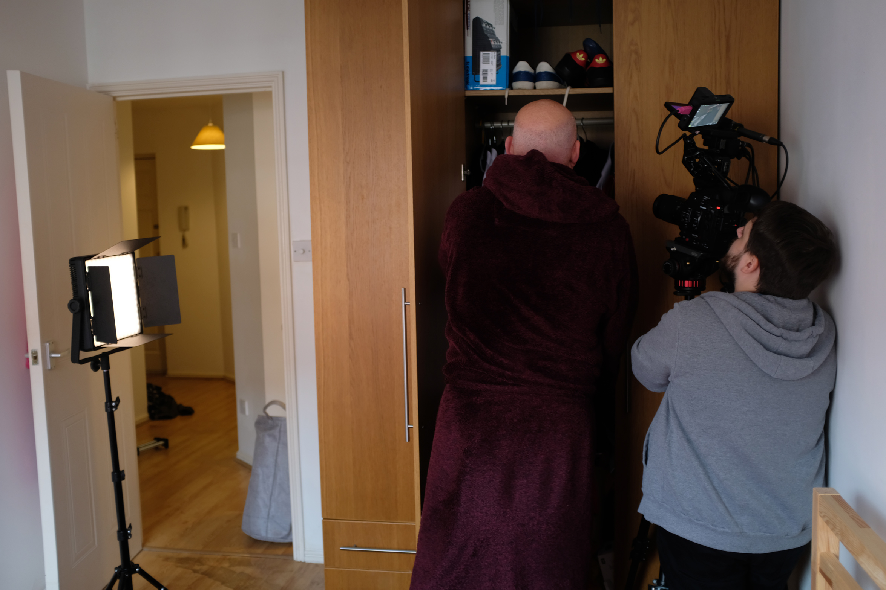

This is a documentary project still in progress with Brian Nash, guitarist in the Group Frankie Goes to Hollywood. It talks about his return to Liverpool and his transition from being a Pop star to Wedding and funeral celebrant during Covid-19. This is trailer, a first montage to promote the documentary. I was in charge of the editing, was a camera assistant on the shootings and a behind the scenes photographer.
